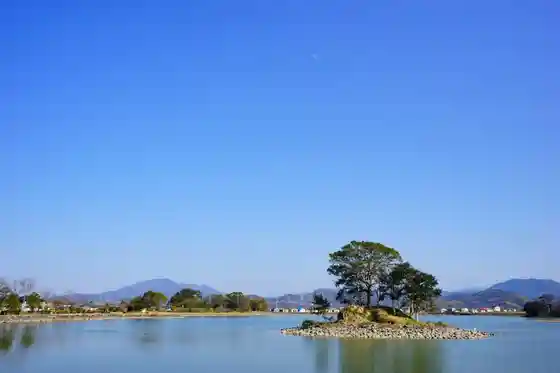
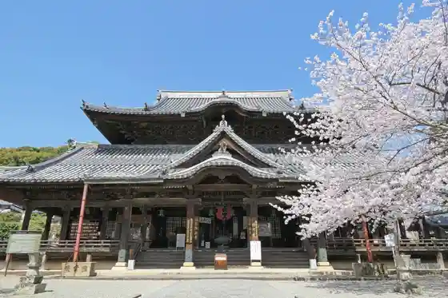
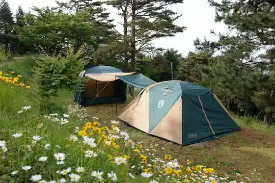

Taira Ike Green Park
Kinokawa, Wakayama · 0736-77-2511 · Official / source link

Roadside Station Seishu Village
Kinokawa, Wakayama · 0736-75-6008 · Official / source link
Kokawa Tera
Kinokawa, Wakayama · 0736-73-4830 · Official / source link

Katsuragi Yama Lookout
Kinokawa, Wakayama · 0736-77-2511 · Official / source link
Hai Land Park Kokawa
Kinokawa, Wakayama · 0736-73-7948 · Official / source link

Saisho Ka Mine Tembo Tokoro
Kinokawa, Wakayama · 0736-77-2511 · Official / source link
no Asobi no Oka
Kinokawa, Wakayama · 0736-77-2511 · Official / source link
Naka Supotsurekurieshon Center
Kinokawa, Wakayama · 0736-66-2420 · Official / source link
Ryumon Yama
Kinokawa, Wakayama · 0736-77-2511 · Official / source link
Nagata Kannon
Kinokawa, Wakayama · 0736-73-3566 · Official / source link
Kyumei Te Yado Honjin
Kinokawa, Wakayama · 0736-77-2511 · Official / source link
Kinokawa Folk History Museum
Kinokawa, Wakayama · 0736-77-0090 · Official / source link
Fukuro Yubinkyoku
Kinokawa, Wakayama · 0736-77-0303 · Official / source link
Meishu Hachiman Shrine
Kinokawa, Wakayama · 0736-75-2477 · Official / source link
Mifune Shrine
Kinokawa, Wakayama · 0736-66-1620 · Official / source link
Kinokawa Tami Koen Puru
Kinokawa, Wakayama · 0736-77-3355 · Official / source link
Kokawa Ubusuna Shrine
Kinokawa, Wakayama · 0736-73-2415 · Official / source link